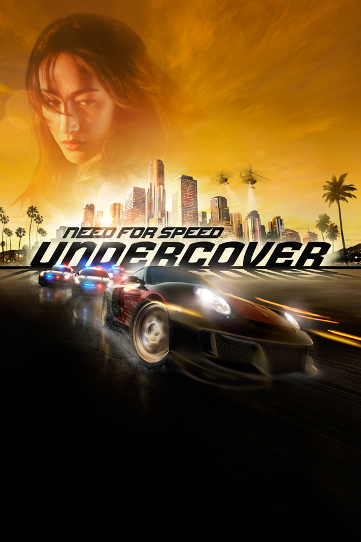

Need for Speed™: Undercover
Need for Speed™: Undercover
Details
|  | |
| Playtime | Not Played |
| Last Activity | Never |
| Added | 5/7/2025 2:53:29 |
| Modified | 5/7/2025 5:11:43 |
| Completion Status | Not Played |
| Library | Playnite |
| Source | Steam |
| Platform | $PC (Windows) |
| Release Date | 11/18/2008 |
| Community Score | |
| Critic Score | 57 |
| User Score | |
| Genre | Racing |
| Developer | EA Black Box |
| Publisher | Electronic Arts |
| Feature | Controller Support Multiplayer Single Player |
| Links | PCGamingWiki Official site HowLongToBeat IGDB SteamDB StrategyWiki MobyGames Wikipedia WSGF |
| Tag | [HLTB] 10 to 20 hours Action Arcade Automobile Automobile Sim Classic Contemporary Controller Direct control Driving EAGL 4 First-Person Great Soundtrack Multiplayer Online Co-Op Open World Racing Realistic Real-Time Simulation Singleplayer Story Rich Street racing Third Person |
Description
Need for Speed: Undercover is a 2008 racing video game, and is the twelfth installment in the Need for Speed series following Need for Speed: ProStreet (2007). Developed by EA Black Box and published by Electronic Arts, it was released on November 18, 2008, for the PlayStation 2, PlayStation 3, Xbox 360, Wii, Microsoft Windows, PlayStation Portable, Nintendo DS, and then on a number of mobile phone platforms in 2009.
The game sees players conducting illegal street races within the fictional Tri-City Area, with the main mode's story focused on the player operating as an undercover police officer to investigate links between a criminal syndicate, stolen cars, and street racers. Gameplay operates on the same manner as previous entries such as Need for Speed: Most Wanted and Need for Speed: Carbon, now including a larger selection of licensed real-world cars, and RPG-styled system in the game's main story mode.
Upon its release, the game received mixed reviews, many of which criticized the game's difficulty, story, setting, and repetitive elements, with some editions receiving lower scores due to severe issues. As of 2021, Undercover is no longer available for purchase digitally in any online stores. Undercover was succeeded by Need for Speed: Shift (2009), the Nintendo-exclusive Need for Speed: Nitro (2009), and the Need for Speed: World (2010) MMO.
Gameplay
In the game, players take part in illegal street races that focus on different styles of races, utilizing a variety of licensed real-world cars (available at the time of the game's development and release) that can be upgraded and customized with new parts, while contending with the involvement of the police in their efforts to impede the player. Racing events featured in the game include the series' standard of circuit, point-to-point, and checkpoint races, alongside the return of Police Pursuit events featured in Most Wanted and Carbon. In addition, Undercover includes new events such as "Outrun" - players must overtake a rival and stay ahead of them for a period of time - and "Highway Battle" - similar to Carbon's "Duel" and Underground 2's "Outrun" event, players attempt to stay ahead of a rival on a highway, battling against both them and local traffic, winning instantly if they pull far ahead and losing for the exact opposite - with its game modes consisting of Career, Single Event, and Multiplayer; both the PlayStation 2 and Wii editions also feature a fourth mode, Challenge Series, which operates similar in function as in Most Wanted and Carbon.
In Career mode, players take on the role of an undercover police officer seeking to break up a syndicate operating within the underground street race world. Like Most Wanted, players achieve this by completing both Racing Events and Pursuit events - the majority of events in this mode include the opportunity to "dominate" them by completing them faster than a specified time record for domination. In Undercover, progress in the story involves completing events that not only earn money, but also experience (or Wheelman Rep) and a special performance bonus - these bonuses either improve the player's driving abilities with all cars or provide other bonuses to the player's playthrough (i.e. an increase in race earnings). Earning enough experience levels up the player's Wheelman level, unlocking a larger performance bonus, new cars and upgrade parts, as well additional events including Jobs - special story-based missions in which the player must complete a specific task such as taking down a criminal's car. Police pursuits in this mode function like in previous editions, though the player's Wheelman level directly impacts how aggressive the police are when in pursuit of the player; the higher the level, the more tactics and vehicle types used in the pursuit.
Players can freely select any event from the game's map, or by using a hotkey to move on to a highlighted event after completing their current one, and are able to replay previous events but only for a reduced amount of cash. The game features a wide variety of licensed real-world cars which are divided into three tiers of performance and four classes - Exotic, Tuner, Muscle, and Sport. Players begin Career mode with a limited selection of cars to use and purchase, but unlock more as they level up and can earn additional cars by defeating criminals in the story. Cars, upgrades and customisation can now be done by visiting the player's safehouse, rather than separate stores, with fine-tuning of a car's performance also conducted in this manner. For the Nintendo DS, PlayStation 2, PlayStation Portable, and Wii editions of the game, players can also use police vehicles but only upon unlocking them during the main mode. Cars receive only cosmetic damage during the game, except in Highway Battles and Job events, where it is possible to "total" a car in these event, the latter per specific parameters assigned to the Job the player is undertaking.
Multiplayer mode varies across the platforms the game was launched on - online multiplayer is possible on Windows, PlayStation 3, Xbox 360 and DS editions; PlayStation 2 and Wii editions feature split-screen multiplayer, while mobile phone platforms do not include the game mode. For online multiplayer, events consist of multiplayer versions of Sprint racing and Highway Battle, along with a team-based event entitled "Cops and Robbers" - two teams of players compete against each other to score points across two rounds; in the first round, the "Robbers" collect flags and deliver them to specified areas to score points, while the "Cops" attempt to arrest them to earn points, whereupon in the second round, the teams switch roles, with the team with the highest score winning the match. While the PlayStation 2 and Wii features Cops and Robbers in its multiplayer mode, albeit with fewer players allowed, they also feature two exclusive events - "Lap Knockout", in which players compete across a circuit, with the last player at the end of a lap being knocked out and the winner being the remaining player at the end; and "Timed Circuit", in which players compete across a circuit over a predetermined length of laps and time, with the player in first place at the end winning the event.
Plot
Setting
The game's story and events take place in the fictional region of the Tri-City Bay, mainly during the daytime between sunrise and sunset. The region consists of four boroughs - Palm Harbor, a downtown city district; Port Crescent, an industrial port that also houses a naval base; Gold Coast Mountains, a mountainous region of observatories and wind farms; and Sunset Hills, a suburban town with rural farms - with each borough linked to the other by a series of highways. The region's design was heavily influenced by the real-life city of Miami, alongside locations visited by the development team across the Gulf Coast and California Coast, with the setting's open world map consisting of around 109 miles (175 km) of road.
In the Nintendo DS edition, the boroughs are named Metropolis, North Port Crescent, South Port Crescent and Riverton, while in the Wii and PlayStation 2 editions, the game's setting takes place within a carbon-copy of two boroughs taken from Most Wanted's setting leaving Beach borough.
The player, an undercover police officer for the Tri-City Bay Police Department (TCBPD), is called in to Palm Harbor police station by their superior Lt. Jack Keller (Paul Pape). The player is informed that their current investigation into the region's underground street racing world is to be joined by Inspector Chase Linh (Maggie Q), a federal agent of the FBI, who wants to bring down an international criminal syndicate operating in the region that is involved in smuggling stolen cars. The player is instructed to pose as a new street racer and join in on major illegal street races, along with gaining infamy with the TCBPD, in order to secure entry into the syndicate. The player achieves this by being recruited into a gang that works with the syndicate, run by Hector Maio (Kurt Caceres) and his brother Zack (Joshua Alba). At the same time, they befriend Carmen Mendez (Christina Milian), a member of the gang. The brothers quickly assign the player to steal cars for them during their racing activities. Upon completing the jobs, Chase instructs the player to arrest the gang, including the brothers.
With Hector's gang out of action, the player is sent to Sunset Hills in order to get recruited by a crew operated by Gregory "GMAC" McDonald (David Rees Snell) - a former TCBPD police officer - Rose Largo (Heather Fox) - an honor student who turned to crime - and Brad "Nickel" Rogers (Lawrence B. Adisa) - a former boxer. Whilst conducting races along with jobs for the crew, the player is instructed by GMAC to steal a car from Chau Wu (Jack Yang), the Triad leader of the syndicate the player is investigating. When the player finds themselves confronted by Chau, he offers to overlook the theft in exchange for the player's help in recovering a car he lost that he needs back, believing it was stolen by GMAC's crew; a meeting with Carmen suggests the theft was likely committed by someone else. Eventually, the player is instructed to arrest GMAC and his crew, though is unable to locate the stolen car in their possession.
Shortly after arresting GMAC's crew, Carmen contacts the player and requests a meeting. Upon reaching her, she reveals that Zack and Hector unknowingly stole the missing car from Chau, and asks them to get rid of it for her. Chau quickly contacts the player the moment they take possession, and receive instructions to deliver it to a warehouse, learning that he knows them to be a police officer and that they have kidnapped Chase to coerce compliance from them. Upon delivering the car, Chase reveals herself to be a corrupt federal agent, who was working with Chau to recover the car as it possessed vital evidence of his activities and a sizeable quantity of cash. Before Chau can dispose of the player, Chase betrays him, murdering him and his henchman, before framing the player for their murder while escaping with the money and evidence.
The player is forced to flee from the TCBPD upon being wanted for the killings, but finds support from Keller. On his instructions, they proceed to take down Chase before she can flee the region, as it is the only way to clear their name. After successfully arresting Chase, Keller commends the player for their hard work at recovering the evidence and managing to not forget themselves during their undercover work, informing them that Carmen made a plea bargain with him in exchange for her testimony against the arrested crews. Some time later, the player meets with Carmen to give them a ride to the local university where she is studying as a med student.
Development
Electronic Arts CEO John Riccitiello stated that the previous release in the series (ProStreet) was only "an okay game...[and was] not good" and that Undercover would "be a much better game". He stated Undercover would have a considerably longer development cycle than its predecessors because the Need for Speed development team had been split up into two teams, both of which would work on a "two-year" development cycle with future titles, alternating releases between them. Riccitiello stated he was "torturing" the development team with a tight development cycle in the past. "When this change was implemented in mid-summer 2007, one team started working on Undercover (giving it only a 16.5 month development cycle), while the other team (that finished ProStreet) would start working on the next title." Riccitiello also stated Undercover took inspiration from action films such as The Transporter, with a large embedded narrative.
Frank Gibeau, President of the EA Games label, stated during development that due to the fact that the sales of ProStreet didn't live up to EA's hopes for the game, the Need for Speed franchise would go back to its roots (although Undercover was already being developed before ProStreet). "John Doyle (Developer at EA Black Box) said that Undercover would feature a brand new game mechanic and a 'Most Wanted-ish' sandbox style of gameplay." The game was also provided with an all new damage system. Andy Blackmore (Senior Vehicle Concept Artist at EA) explained how one of the Porsche cars that was "conceptualized" in the game was then brought to life for the game from a brief description to being approved by Porsche.
A few days before Undercover's release, EA revealed a few plot details. A video was uploaded that showed the player evading capture from the Tri-City Police Department (TCPD).
Reception
Reception of Undercover was mixed. There were complaints about the game's easy difficulty, repetitiveness, and poor texture maintenance. The IGN review went as far as recommending the game's rivals such as Rockstar Games' Midnight Club: Los Angeles and EA's own Burnout Paradise.
The IGN review was critical of the PS3 version of Undercover giving it a 4/10, calling it a "poor game with a ton of problems" and with "practically no redeeming qualities". IGN also commented on how the reason for having an open world environment was lost because a player could only start an event from the map. However, the Xbox 360 and the PC versions received a higher score in contrast to the PS3 version in the IGN review, due to the fewer severe problems that occurred.
The 1UP.com review called the game only "fairly successful," but praised the game's selection of cars and tighter handling on the vehicles. However, the "leveling" system that unlocks cars and upgrades was criticized for resembling "grinding". In general, sparse traffic, wide-open roads, and poor AI led to complaints about extremely low difficulty, however, one reviewer commented on how this may have been a marketing ploy to target a wider audience.
The reception to the live-action cutscenes was almost universally negative, with many critics noting that the videos were poorly acted and lacked purpose. Some compared the cutscenes to a Michael Bay or Roland Emmerich film. The lack of connection between the crime fighting undercover cop story and the racing game play was particularly criticized by IGN who said, "You ... run missions where you steal cars, make 'special' deliveries and things like this now and again, but you never actually see any sequences that show how the cops are putting the evidence together or anything of that sort. Chase Linh will tell you [what] you need to do to get on the inside of a racing group in order to get dirt on them, and then after a race she'll say 'We have enough, let's move in.' [But you're left asking: How did that help at all?]" Finally, the in-game frame rate received little praise, and GameSpot particularly criticized the PS3 version for this problem resulting in a lower score on the platform compared to the Xbox 360 and PC versions.
Need for Speed: Undercover has sold 1.4 million copies in the United States.